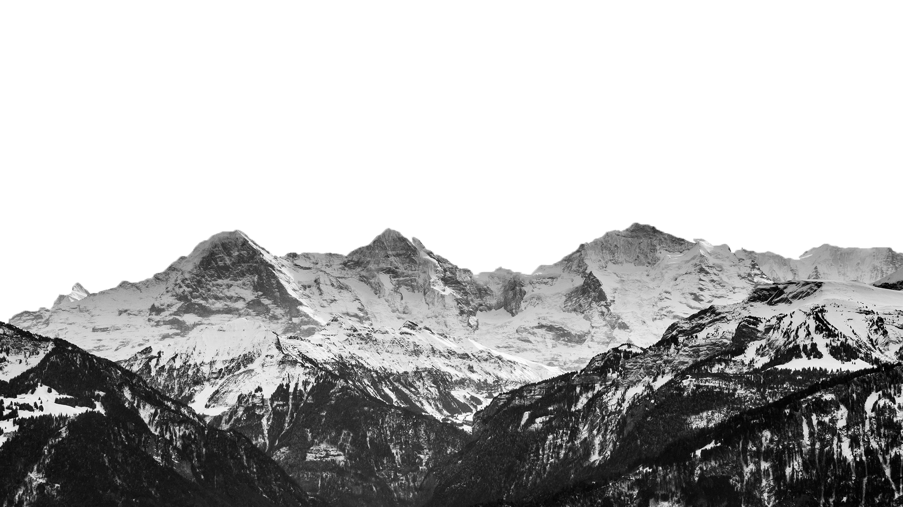
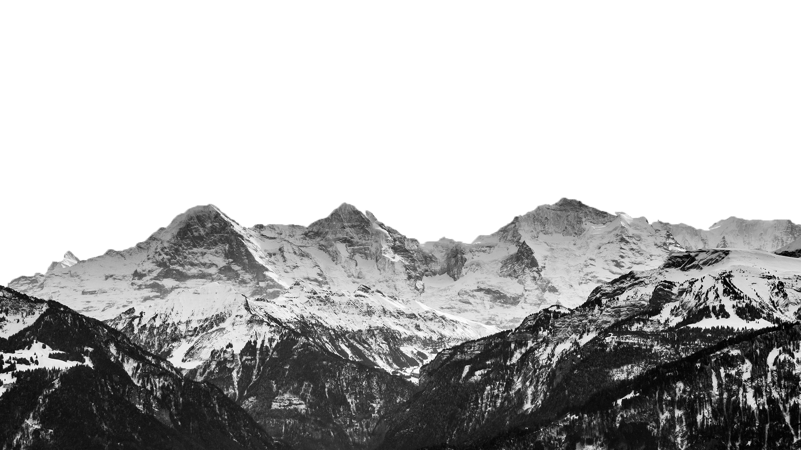
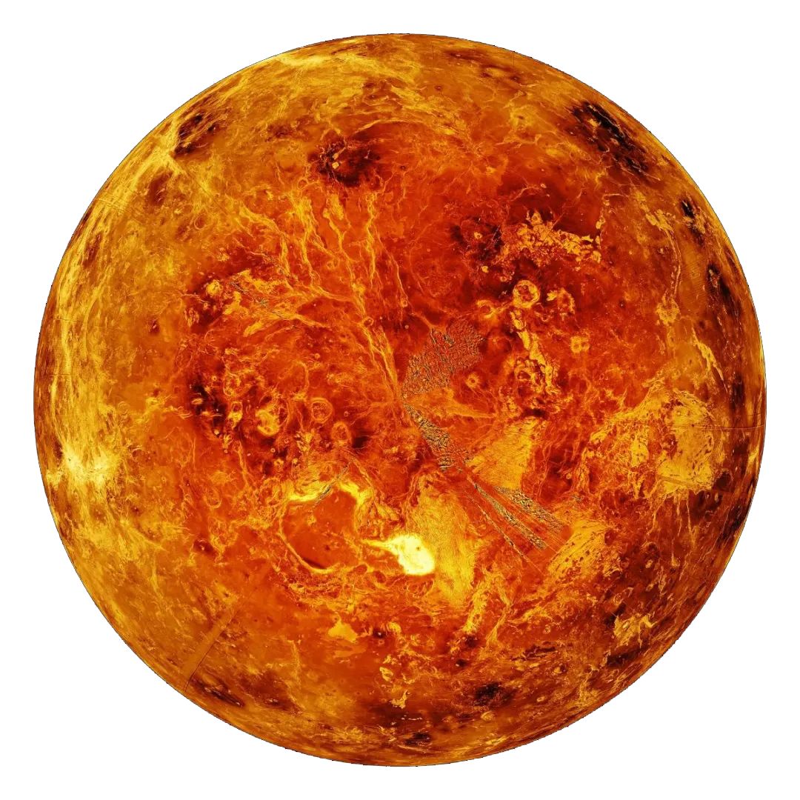
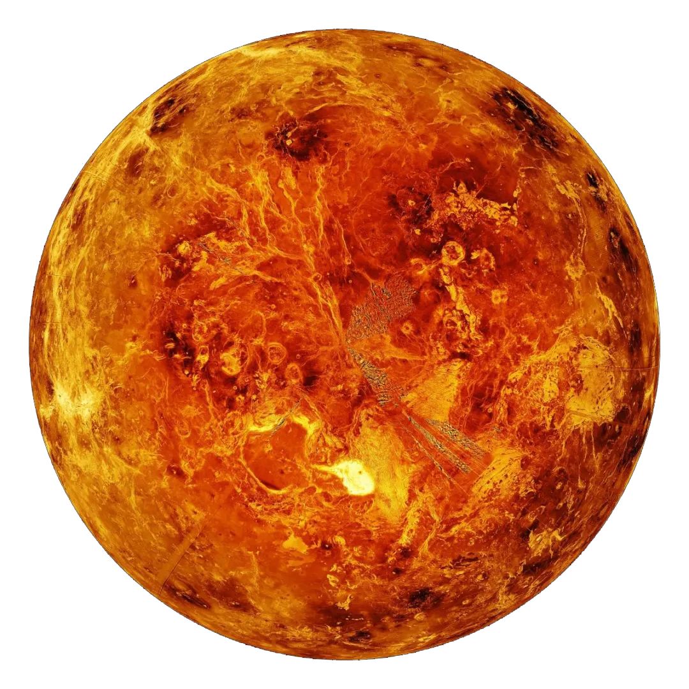

地球
地球（英文名：Earth；拉丁文：Terra）是距离太阳的第三颗行星，也是人类已知的唯一孕育 和支持生命的天体。地球的表面大约 29.2% 是由大陆和岛屿组成的陆地。剩余的 70.8% 被水 覆盖，地球外层分为几个刚性构造板块，它们在数百万年的时间里在地表迁移，而其内部仍然保 持活跃，有一个固体铁内核、一个产生地球磁场的液体外核，以及一个驱动板块构造的对流地幔等。

 

地球（英文名：Earth；拉丁文：Terra）是距离太阳的第三颗行星，也是人类已知的唯一孕育 和支持生命的天体。地球的表面大约 29.2% 是由大陆和岛屿组成的陆地。剩余的 70.8% 被水 覆盖，地球外层分为几个刚性构造板块，它们在数百万年的时间里在地表迁移，而其内部仍然保 持活跃，有一个固体铁内核、一个产生地球磁场的液体外核，以及一个驱动板块构造的对流地幔等。


海王星（英语：Neptune，天文符号：♆）是太阳系八大行星之一，也是已知太阳系中离太阳最远的大行星。 海王星的轨道半长轴为30.07天文单位，公转周期为164.8年，质量为17.147地球质量（第3位，比它的近邻 天王星稍大），半径为3.86地球半径（第4位）。
「火星」 (英文名:Mars concert)，是散落在地球的火星人心中最近的家，也是所有疲惫灵魂最大的避风港， 为漂泊的心灵提供一方归属地。这里，古罗马的战神“马尔斯”早已放下利刃，化身温暖的歌声；所谓的“红色星 球”，此刻是无数心灯点亮的港湾。若你在地球偶尔感到“荧荧如火”，心绪无处安放，那不妨把它称之为“归处”，——回 到这里，便是家。
 

金星（英语、拉丁语：Venus，天文符号：♀），在太阳系的八大行星中，是从太阳向外的第二颗行星， 轨道公转周期为224.7天，没有天然的卫星。史记‧天官书》作者司马迁从实际观测发现太白为白色， 与“五行”学说联系在一起，正式把它命名为金星。英文名称源自罗马神话的爱与美的女神维纳斯（Venus） ，古希腊人称为阿佛洛狄忒，也是希腊神话中爱与美的女神。金星的天文符号用维纳斯的梳妆镜来表示。
木星（Jupiter）是太阳系中距离太阳第五近的行星，也是太阳系中体积最大的行星。 古人早已认识这颗行星 ，罗马人以主神朱庇特命名这颗行星。古代中国则称木星为岁星， 取其绕行天球一周约为12年，与地支相同之故。到西汉时期，《史记‧天官书》作者 司马迁从实际观测发现岁星呈青色，与“五行”学说联系在一起，正式把它命名为“木星”。
水星（英语：Mercury；拉丁语：Mercurius），因快速运动，欧洲古代称它为墨丘利 （Mercury），意为古罗马神话中飞速奔跑的信使神。中国古称辰星，西汉《史记‧天官 书》的作者司马迁从实际观测发现辰星呈灰色，与五行学说联系在一起，以黑色属水， 将其命名为水星。
天王星（英文：Uranus，天文符号：⛢，占星符号：♅），为太阳系八大行星之一， 是太阳系由内向外的第七颗行星（18.37~20.08天文单位），其体积在太阳系中排名 第三（比海王星大），质量排名第四（小于海王星），几乎横躺着围绕太阳公转。封 面图为旅行者2号飞掠天王星最近时拍摄的照片。
土星（英文：Saturn，拉丁文：Saturnus，符号：♄），是太阳系八大行星之一，到太阳的距离排在太阳系第六位。 古代中国土星是中国古代人根据五行学说结合肉眼观测到的土星的颜色（黄色）来命名的，亦称之为镇星（常写作填 星）。土星的英文名称Saturn来自于罗马神话中的农业之神萨图恩。